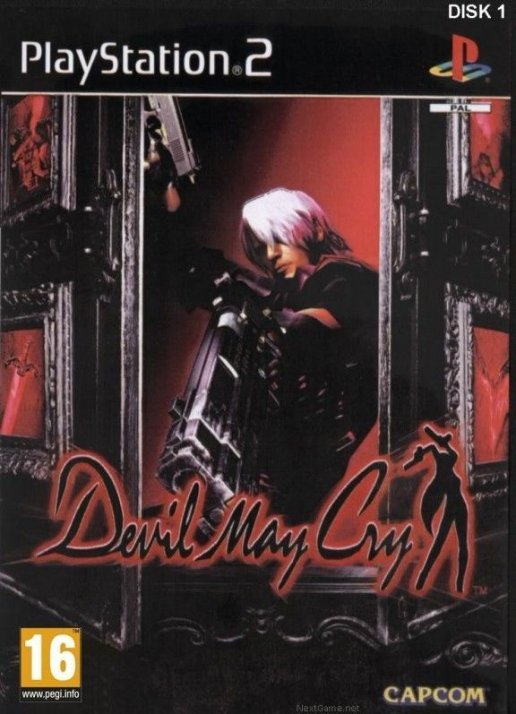
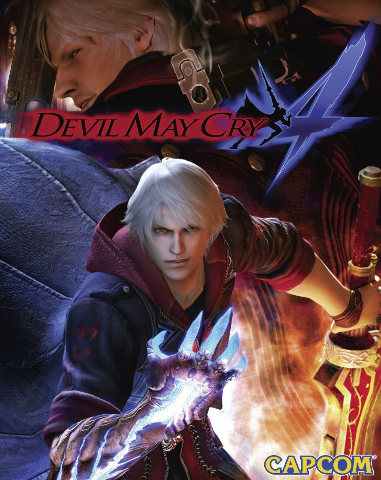
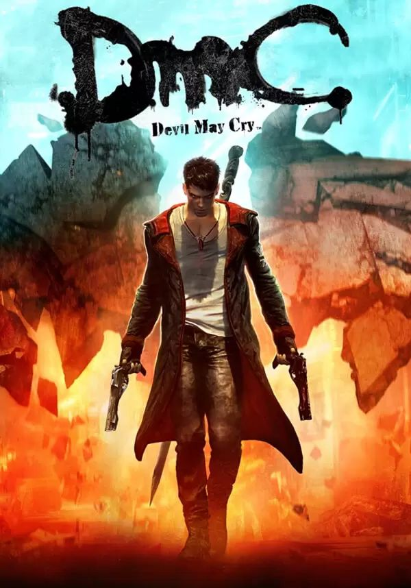

Devil May Cry
Devil May Cry — видеоигра в жанре слэшера с элементами пазла, разработанная и изданная компанией Capcom в 2001 году эксклюзивно для консоли PlayStation 2.
Первая игра в одноимённой серии и вторая в основной хронологии.
демонический охотник Данте расследует вторжение демонов на острове Малит. Он сталкивается с тёмным братом-близнецом Вергилием, который хочет разбудить силу их отца, демона Спарда. В финале Данте побеждает Вергилия, но тот остаётся жив, продолжив соперничество в следующих играх.
Намёки на создание игры были ещё в 1999 году. Изначально игра должна была стать очередным проектом в серии Resident Evil. В игре появлялся новый герой — Тони. Он являлся очень сильным, умным и проворным благодаря улучшениям с помощью генной инженерии и биотехнологиям.
Devil May Cry 2

Devil May Cry 2 — экшн-игра, выпущенная Capcom в 2003 году эксклюзивно для PlayStation 2. Она подверглась критике за целый ряд решений при разработке в проработке геймплея и персонажей, в особенности, за снижение уровня сложности.
Devil May Cry 2 — игра в жанре экшен, где игрок управляет Данте или Люсией. Люсия новый персонаж, обладающая своими собственными приёмами и способностями, а также оружием.
В Devil May Cry 2 Данте помогает охотнице Люсии остановить бизнесмена Ариуса, который хочет стать демоническим богом с помощью древнего артефакта. В конце Данте побеждает демона Аргусакса, а Люсия остаётся жить. Сюжет слабее первой части, и игра считается худшей в серии.
Devil May Cry 3: Dante's Awakening

Компьютерная игра в жанре слэшер, разработанная Capcom Production Studio 1 и выпущенная Capcom в 2005 году для PlayStation 2. Игра является приквелом к оригинальному Devil May Cry, а также первой игрой в хронологическом порядке серии. Ещё до выпуска, Devil May Cry 3 была сильно раскритикована за свой высокий уровень сложности, но также снискала себе славу за нововведения и возврат классического «хардкорного» геймплея Devil May Cry.
Молодой Данте открывает агентство охоты на демонов, но его вынуждают идти сражаться с братом Вергилием, который хочет открыть портал в демонический мир, чтобы получить силу их отца Спарда. В финале Вергилий проигрывает и отправляется в ад ради получения силы. Игра раскрывает начало вражды братьев.
Devil May Cry 4
Видеоигра в жанре слешер, разработанная и изданная компанией Capcom. Четвёртая игра в одноимённой серии и третья в хронологии. О начале разработки игры было объявлено в марте 2007 года. Сама игра была выпущена 31 января 2008 года для платформ PlayStation 3 и Xbox 360. В России игра была полностью локализована студией 1С и вышла лишь 5 сентября.
В Devil May Cry 4 новый герой Неро сражается за «Орден Меча», который похищает девушек для пробуждения демона Спарты. Данте вмешивается, раскрывая, что глава ордена Санктус – марионетка древнего зла. Неро пробуждает свою демоническую силу (ведь он оказывается внуком Спарды), побеждает Санктуса и спасает мир. После этого он становится охотником, как и Данте.
Devil May Cry 5

Пятая часть основной серии Devil May Cry. Игра была анонсирована на выставке E3 2018 года. Разработчиком и издателем игры выступает японская компания Capcom.
Действие происходит после событий Devil May Cry 4, игра концетрируется на Неро, когда он отбивается от широко распространенного вторжения демонов, все время разыскивая замаскированного незнакомца, который отсек его правую руку. Игра вышла 8 марта 2019 года.
В Devil May Cry 5 демоническое дерево Клипот вырастает в городе, высасывая людскую кровь. Данте и Неро объединяются, чтобы остановить могущественного демона Уризена. В этом им помогает новый загадочный персонаж V. В финале оказывается, что Уризен и V это две части Вергилия, которые объединяются воедино. братья снова сражаются, но Неро останавливает их, и Вергилий с Данте уходят в Ад, чтобы уничтожить Клипот изнутри. Неро возглавляет агентство.
DMC:Devil May Cry
компьютерная игра 2013 года в жанре слэшер, разработанная британской компанией Ninja Theory и изданная Capcom для ПК под управлением Windows и консолей PlayStation 3 и Xbox 360. Игра является частью и перезапуском серии Devil May Cry, а также первой игрой в серии, которую разработала не внутренняя студия Capcom. Игра впервые вышла в январе 2013 года. В России игра была издана компанией «1С-СофтКлаб» и выпущена с оригинальной голосовой дорожкой и переведёнными субтитрами. Перезапуск знаменитой франшизы. Игра полностью поменяла сюжет, оставив лишь характер Данте. Игра вызвала смешанные эмоции в сообществе и до сих пор не получила продолжения
полукровка, воюющий против демонов, правящих миром через корпорацию Мундо. Он объединяется с братом Вергилием и охотницей Кэт, чтобы свергнуть короля демонов Мундуса. В финале Данте убивает Мундуса, но отвергает планы Вергилия по порабощению человечества, оставшись независимым защитником мира.